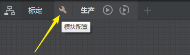
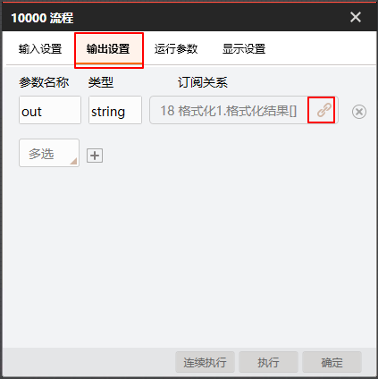
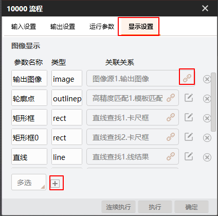
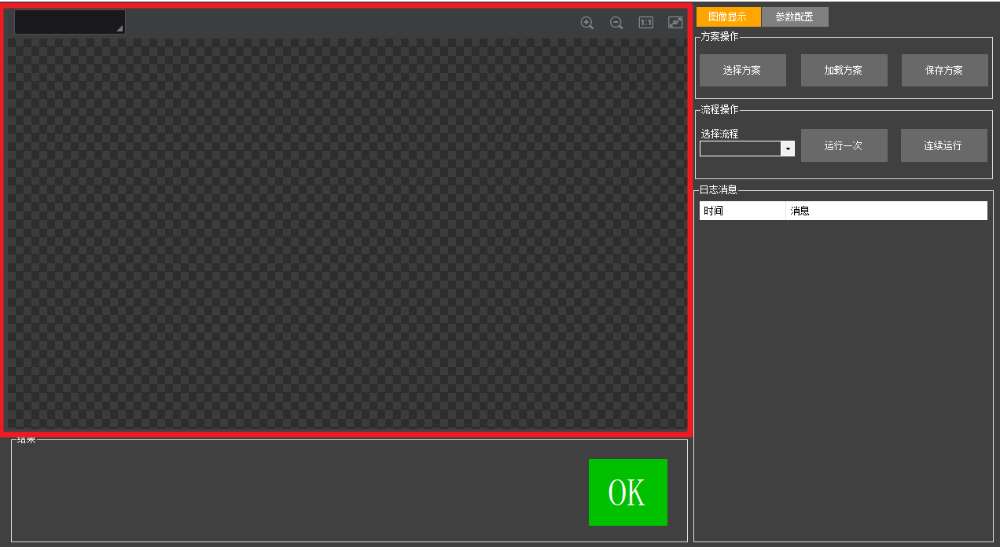

一、应用场景
本案例作为VM二次开发的定位引导案例，适用场景为单相机拍照，引导机械手抓取产品的情形。
典型场景包括：
- 注解
- 本案例演示重点为如何使用VM模块去实现定位抓取，并未考虑图像透视和畸变带来的抓取精度问题，因此若实际项目中照搬案例中的方法去引导机械手抓取，被抓产品可能越靠近视野边缘抓取误差越大，越靠近视野中心区域误差越小，此为正常现象。
二、搭建方案
示例方案路径：./PlatformSDKSampleCS/LocateDemoCs/LocateDemoCs.sol
本演示案例为应用案例，软件和具体方案是强相关的。可加载设计好的方案，该演示方案为Demo文件夹下的LocateDemo.sol方案。若导入其他案例提供的方案，则需进行相关配置方可运行出正确结果。
本方案包含一个标定流程和生产流程，流程的整体框架如下图所示。
-
标定流程使用标定板，通过查找标定物中两条边缘直线的交点作为标定图像输入点。
-
生产流程通过旋转计算模块来计算运行图像点和示教图像点的偏差。偏差包含两部分：一部分是由纯平移（不考虑旋转）产生的平移偏差，另一部分是由机械手不共轴旋转产生的偏差。两者偏差加在一起便是示教点与运行点的坐标偏差。
方案的数据结果经过格式化模块汇总，并在流程“输出设置”中订阅，可在二次开发中通过流程输出结果，降低二次开发软件与具体模块的耦合性。
开发获取结果的是流程输出的“out”参数，开发渲染控件RenderControl绑定的渲染为图像源图像、DL字符定位输出矩形框、格式化文本，具体操作如下：
-
点击流程图标旁边的“模块配置”图标进入流程配置窗口。

-
点击【输出设置】，其中参数名称下面的“out”（区分大小写）即为开发获取的参数名，点击“订阅”按钮，选择格式化作为绑定数据，具体如下图所示。

-
点击【显示设置】，点击“加号”可增加需要的渲染，点击“订阅”按钮可绑定渲染内容，配置方式如下图所示。

-
配置格式化模块内容。
格式化模块必须配置正确。若使用时修改了案例自带的方案，特别是修改格式化模块订阅的数据，则必须参照案例自带的方案进行格式化模块配置，格式为：[条件检测结果INT],[数据项1],[数据项2],[数据项3]
在Visual Studio直接调试，或者在bin目录下双击LocateDemoCs.exe运行。LocateDemo界面如下图所示。
操作逻辑：
-
弹出软件运行界面后，在方案操作区域点击【选择方案】，选择完成后点击【加载方案】。
-
在流程操作区域选择需要执行的流程名，点击【运行一次】或【连续运行】即可执行流程。
本案例主要函数包括：方案加载、单次执行、连续执行、注册工作结束回调、结果获取、方案保存和渲染界面绑定。
本案例涉及3个控件，分别为VmRenderControl控件、VmMainViewConfigControl控件和VmGlobalToolControl控件。
-
VmRenderControl控件：用于渲染图像数据。

-
VmMainViewConfigControl控件：用于显示流程配置。

-
VmGlobalToolControl控件：用于显示全局配置工具。